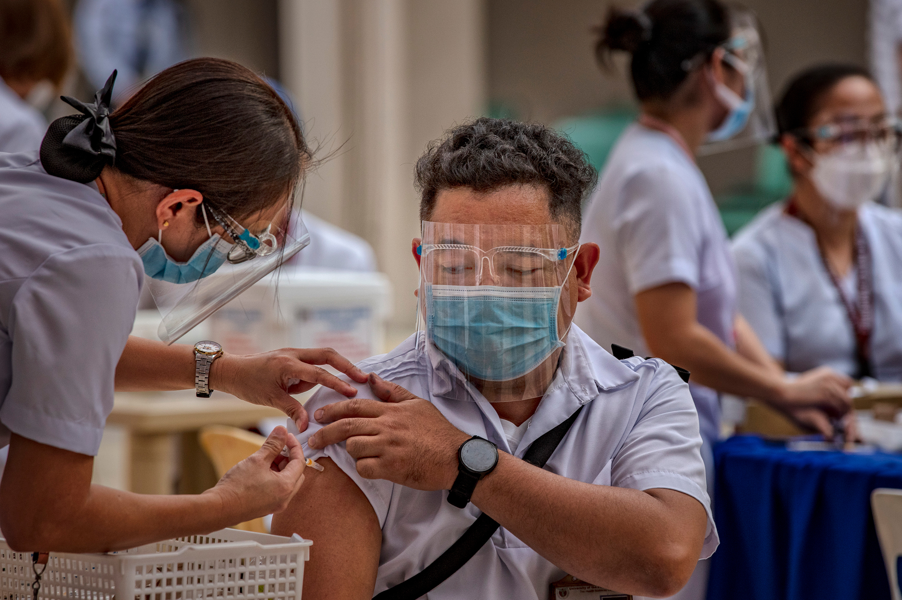
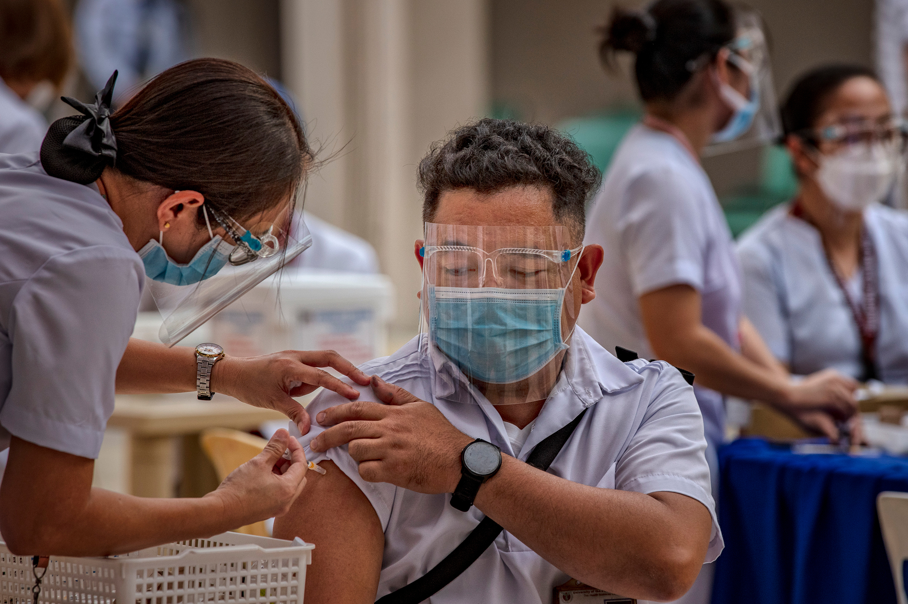

-
BLOOD CLOTS AND COVID-19 VACCINES
The symptoms of very rare cases of
blood clotting after vaccination with AstraZeneca and Janssen COVID-19
vaccines are
This is a very rare phenomenon, Please take your vaccine as soon as it's
your turn
-
LATEST RECORD FOR DOSES ADMINISTERED
-
A1
1st dose: 21,963
2st dose: 19,866
Total: 41,829
-
A2
1st dose: 21,321
2st dose: 25,809
Total: 49,130
-
A3
1st dose: 34,164
2st dose: 40,406
Total: 74,569
-
A4
1st dose: 78,941
2st dose: 20,211
Total: 99,152
-
A5
1st dose: 8,290
2st dose: 2,666
Total: 10,956
TOTAL DOSES ADMINISTERED: 275,636
|
-
SLU GYM
FIRSTDOSE WITH STUB(1000)
A4 & A5 From Health Districts
of:
Aurora Hill, Quirino Hill, Pinsao, Lucban, Campo Filipino
Second Dose without STUB
September 14, 2021 - Sinovac(1st Dose: Aug
17)
September 15,2021 - Astrazeneca(1st Dose: July 21)
-
UB GYM
FIRSTDOSE WITH STUB(500)
A4 & A5 From Health Districts
of:
Pacdal, Atok Trail, Engineer's Hill, Mines View, Loakan, Scout
Barrio
Second Dose without STUB
September 14, 2021 - Sinovac(1st
Dose: Aug 17)
September 15,2021 - Astrazeneca(1st Dose: July 16 and
July 21)
-
SM B1 PARKING
FIRSTDOSE WITH STUB(500)
A4 & A5 From Health
Districts of:
Atab, City Camp, Quezon Hill, Irisan, Asin
Second
Dose without STUB
September 15,2021 - Astrazeneca(1st Dose: July 16
and July 21)
|
 
